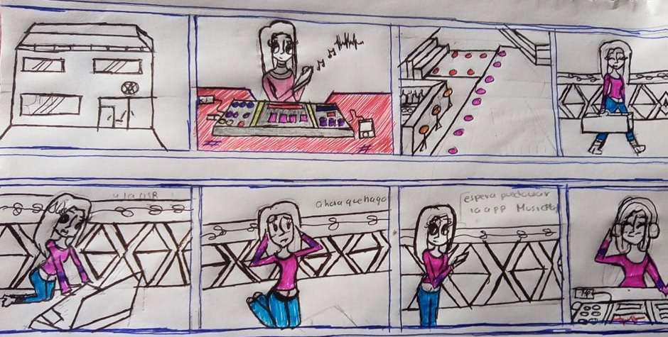
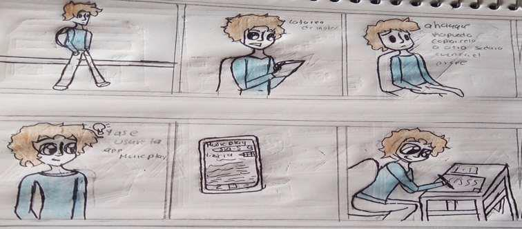

Victoria es una joven que vive sola ya que dejo a su familia para llevar una vida
independiente se graduó como ingeniera de audio y ahora trabaja en una
empresa que se encarga de realizar eventos y victoria en este caso se encargara
del manejo de consolas (controladores y secuencia MIDI) su trabajo es encargarse
de la música y el ambiente para un evento en un inauguración de un nuevo
club , en la hora para el evento victoria se percata que no lleva su USB al trabajo
pero recuerda que existe una aplicación para reproducir música y escuchar los
éxitos más sonados del momento .
ESCENARIO ALEJANDRO:
Alejandro es un joven estudiante que vive con su familia, un día Alejandro iba en
camino a la escuela pero Alejandro no recordaba que tenía clase de inglés y el
profesor le había dejado de tarea escoger una canción y traducir la letra de inglés
a español, Alejandro lo recuerda a unos minutos de iniciar la clase así que
recordó que tenía una aplicación MusicPlay que podía ayudarlo en esta situación
así que busco su canción y fue directo a la letra y así pudo realizar su tarea.

